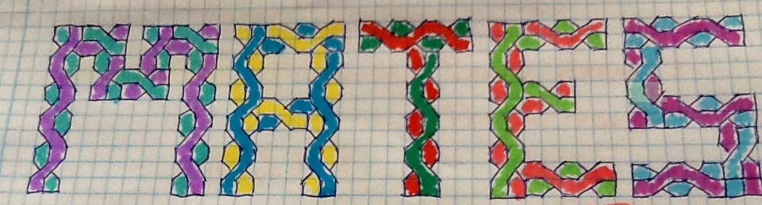

Divisibilidad, primos... y el diablo de los números
Objetivos

Dibujo original de Nerea Lázaro (2º ESO C). Portada de su cuaderno de clase.
Mediante el trabajo con la presente propuesta didáctica pretendemos:
- Comprobar, cómo, es posible acercarse y comprender los conceptos matemáticos desde una perspectiva diferente a la que estamos acostumbrados habitualmente.
- Mostrar, que es posible cambiar nuestra opinión acerca de las matemáticas, comprobando que: lo que en un momento determinado nos parece imposible de comprender, días, semanas más tarde, mediante un trabajo concienzudo y con mucha confianza en nosotros mismos, somos capaces de comprenderlo y dominarlo.
- Trabajar los conceptos de divisibilidad y números primos.
- Indagar en ciertas propiedades especiales de los números primos y en algunas conjeturas sobre ellos.
Espero resulte atractiva y aprendamos mucho, no sólo en contenidos y conocimientos matemáticos sobre divisibilidad y primos, sino también el modo de afrontar el trabajo en matemáticas y nuestra visión sobre esta materia.